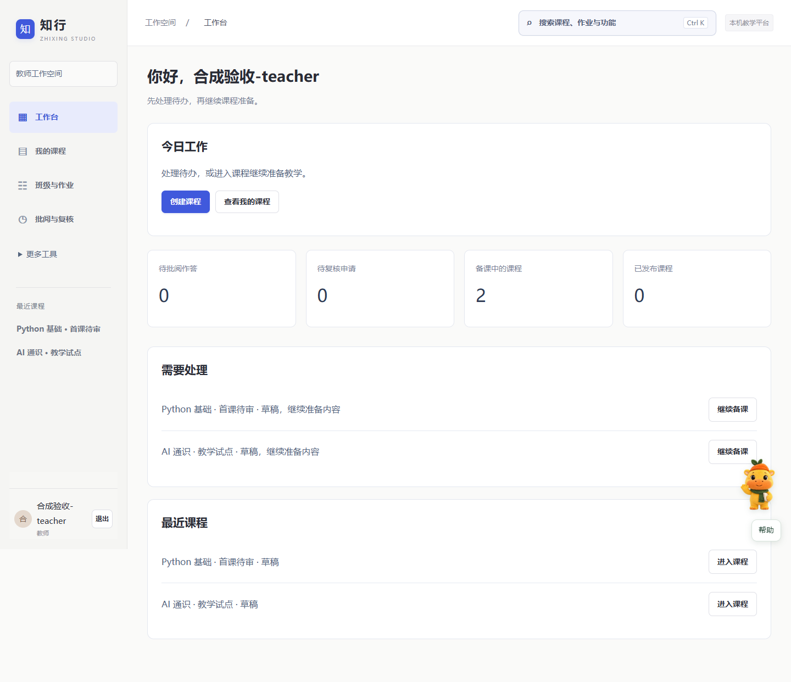

准备课程
上传资料，整理目标与知识点，保留原文出处。
插件化 AI 助教平台 / 公开体验
让老师把资料、知识点和练习连成一堂课，让学生在提问、作答与复核中找到下一步。
无需注册 · 合成示例数据 · 浏览器本地保存
此页是流程演示；真实账号、模型与沙箱需运行完整部署版。

一条看得见的教学路径
上传资料，整理目标与知识点，保留原文出处。
检查题目和量规，完成预览，再提交发布审批。
班级邀请、作业快照、问答提示，都在课程中完成。
分开看答案和解释；有疑问交给教师追加复核。
选择一个视角开始
演示中可随时切换身份。
正式部署使用独立账号和后端权限。
看演示，也看清边界
完整源码包含 DS-H 插件调用、LongCat 接入、SQLite 记录与可选 Docker 程序核验。公开演示不收集真实学生信息，不调用付费模型，也不修改正式数据。
演示菜单是流程样例；完整部署版以手册及当前源码为准。
源码与部署包由项目负责人提供，GitHub 链接待账号连接后补充。